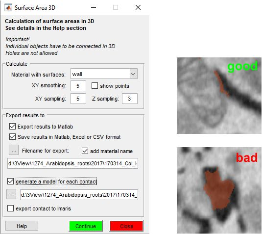

Surface Area 3D plugin
This plugin was designed for calculation of planar surface areas from 3D datasets (see an image below)
Features:
- Detection of 3D objects using 26 points connectivity
- For each of the detected 3D object the plugin calculates its surface area, which is defined from the centerlines of each cross section
- Export results and resulting surfaces to Matlab, Imaris, Amira or save as CSV, Excel spreadsheets or Matlab binary structure file
- Visualize the surfaces in Matlab
Contents

Parameters
- Material with surfaces - select material from which the objects have to be detected and analysed. The object detection is done in 3D using the 26-edge connectivity, the surfaces are generated for separately for each of the detected objects
- XY smoothing - each profile of the detected 3D object is thinned to a single centerline and the points of that centerline are detected. Coordinates of the detected points may be smoothed using this smoothing factor
- XY sampling - to generate the surface the detected points are triangulated, the XY sampling parameter allows to increase size of triangles by skipping points. When XY sampling is 3, each 3rd of the detected points will be used for triangulation
- Z sampling - similar to XY sampling, but applied to the Z-dimensions
- show points - the detected points are displayed as the Selection
layer in MIB, which gives an easy way to check the points. Important:
remember to clear the Selection layer after the check (
Shift+Cshortcut), otherwise you may accidentally add/subtract those areas to/from the model! - Export results to Matlab - generate a structure in Matlab with the
following fields:
- .pixSize, contains info about pixel size of the dataset (first element only). To access it type:
SurfaceArea(1).pixSize - .MaterialName, name of the analysed material (first element only). To access it type:
SurfaceArea(1).MaterialName - .xySmoothValue, smoothing in XY (first element only)
- .xySamplingStep, xy sampling value (first element only)
- .zSamplingStep, z sampling value (first element only)
- .SumAreaTotal, the total area of each contact. To access it type:
SurfaceArea(N).SumAreaTotal, where N should be replaced with index of the surface - .PointsVector, indices of the detected points for each profile as .PointsVector{SliceId}{IndexOfProfile}[x,y,z]
- .PointCloud, matrix with all detected points as [index of the point](x,y,z)
- .Centroid, coordinates of centroids for each object
- .Area area between each z and z+1 slices, as a cell array, where z is defined from the first slice of the object
- .pixSize, contains info about pixel size of the dataset (first element only). To access it type:
- Save results in Matlab, Excel or CSV format - specify filename to save the results; use the Filename for export button or an editbox below to provide it
- add material name - add name of the processed material to the filename
- generate a model for each contact - specify a folder to save generated surfaces in AmiraMesh format
- Export contacts to Imaris - export contact surfaces to Imaris, requires Imaris version 8 and ImarisXT connection
How to Use:
An example shows the general use of the plugin: the contacts between mitochondria and ER are automatically generated from two materials and measured.
Normally, the preferrable way is to draw the contact with a mouse rather than use this automatic procedure, since the automatic way may result "bad" profiles as on the image above.
Link to youtube.com video: <https://youtu.be/z0jxNHIOipA>, please note that the plugin in the video named as ContactArea3D and demonstrates application of the plugin for analysis of contacts between organelles.
Link to the dataset: <http://mib.helsinki.fi/tutorials/3D_Modeling_files/Huh7.tif>
Link to the model: <http://mib.helsinki.fi/tutorials/3D_Modeling_files/Labels_Huh.model>
Usage of this plugin is also explained in this work
Credits and Acknowledgements
Written by Ilya Belevich, University of Helsinki
version 1.00, 13.02.2020
email: ilya.belevich @ helsinki.fi
web: https://www.mv.helsinki.fi/home/ibelev
Big thanks to David Legland (Institut National de la Recherche Agronomique, France) for discussion about triangulation of points: function mibTriangulateCurvePair.m is based on triangulateCurvePair.m from MatGeom tools by David Legland
How to cite
If you used this code please cite it as
Paterlini A., Belevich I., Jokitalo E., Helariutta Y., Novel computational approaches to study plasmodesmata and their environment. Journal name,
<https://andreapaterlini.github.io/Plasmodesmata_dist_wall/index.html>